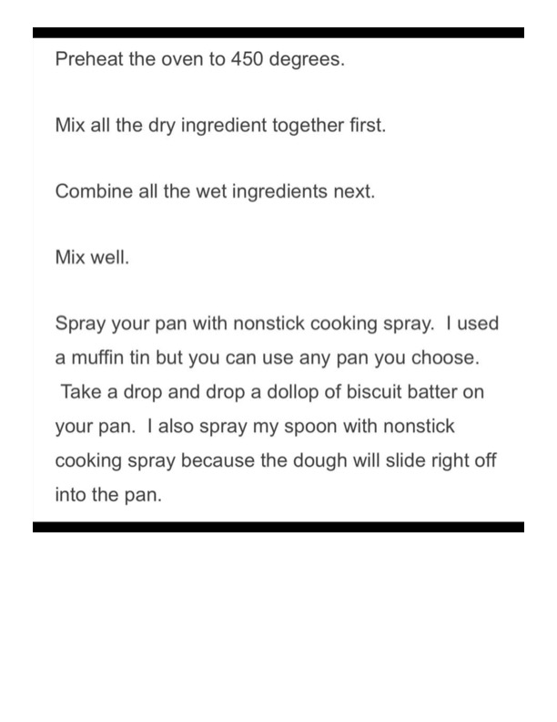

Drop Biscuits (Instructions Page)

Original cookbook page 8
A simple drop biscuit recipe that can be made using a muffin tin or any pan of your choice. Instructions page only.
Ingredients
- Dry ingredients (see previous page)
- Wet ingredients (see previous page)
- Nonstick cooking spray
Instructions
- Preheat oven to 450°F.
- Mix all dry ingredients together first.
- Combine all wet ingredients next.
- Mix well to combine wet and dry ingredients together.
- Spray your pan with nonstick cooking spray (a muffin tin works well, but you can use any pan).
- Drop a dollop of biscuit batter onto your pan using a spoon. Tip: Spray your spoon with nonstick cooking spray to help dough slide off into pan.
Recipe #8 from collection